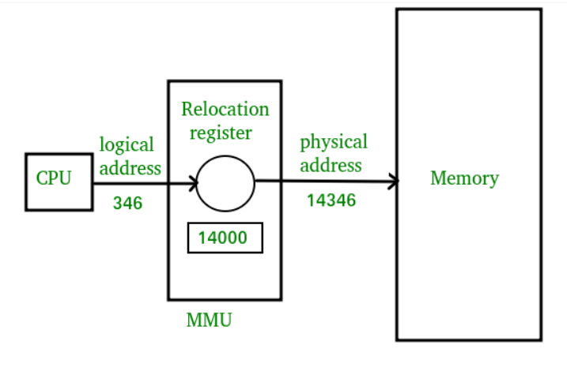

Address Binding
Process of making logical address to physical address in the memory is called Address binding
An address binding can be done in three different ways
1) Compilation Time: The physical address is embedded to the executable of the program
2) Load Time: If the address is not known at the compile time where process will reside then relocatable address will be generated & loader translates it to absolute address.
3) Run/Execution Time: Moving a process during run time from one memory location to another.


Note:- Logical and physical address are same in compile time and load time address binding
- They are different in execution time address binding
Multiprogramming memory management using partitioning
In OS, Memory Management is the function responsible for allocating and managing main memory so as to ensure effective and efficient use of Primary Memory.

Fixed Partitioning
It's the oldest and simplest technique. Here main memory is divided intonumber of static(fixed) partitionat system generated time.
Here spanning is not allowed. Process has to be <= size of partition.
We can place process in any of the partition. But we try to place it at the first best partition - Equal Size Partition
- Unequal Size Partition
Advantage :- Simple to implement
- Little OS overhead
Disadvantage :- Inefficient
- Max number of active process is fixed
Placement Algo :- One process queue for partitioning
- Single queue

- Equal Size and Unequal Size partition

Dynamic Partitioning
Here partitions are created dynamically.Each process is loaded into a partition of exactly the same size of that process.
Placement Algo :- First Fit: First hole that is big enough is allocated to program
- Best Fit: Smallest hole that is big enough is allocated to program.
- Worst Fit: Largest hole that is big enough is allocated to program.